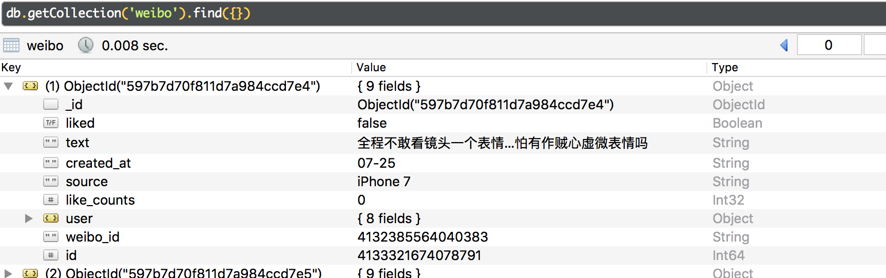

程序员代码下的许豪杰
最近豆瓣网友沉默如海与知名网红、“创业达人”许豪杰的争端在微博与豆瓣上闹得沸沸扬扬，作为一名python业余选手，用程序带大家看看到底网友们是如何看待许豪杰的。
背景
北京时间2017年7月16日,一篇名为《怎么能想到我喜欢的微博大v段子手竟然是恋童癖！！...》的文章在豆瓣上发布,疑是曝出知名网红，“创业之神”,安徽卫视《超级演说家》季军得主许豪杰为恋童癖。 随后,7月22日，许豪杰发布一条微博予以回击,这条微博截止2017年8月1日已被转发12838次，评论32895条。接下来网游们都说了什么？
数据抓取
笔者用python(一门编程语言),抓取该微博评论21270条,（其中剔除了一些网友间互相回复的评论，仅保留对该微博的主观评价）

数据分析
这里的数据分析，其实就是对自然语言的分析.会对每条评论进行分词,统计各个词汇出现的频率。
并绘制出以下图片，图中字越大表明出现的频率越高。
其中“恶心”一词高居榜首，出现3471次，就是说有3471条评论评价该条微博“恶心”。另外“不要脸”、“变态”、"好丑"也出现频率极高。
注：本文仅分析了微博网友的评论数据,不带表本人的个人观点。最后，我就说恋童癖变咋了😠😡